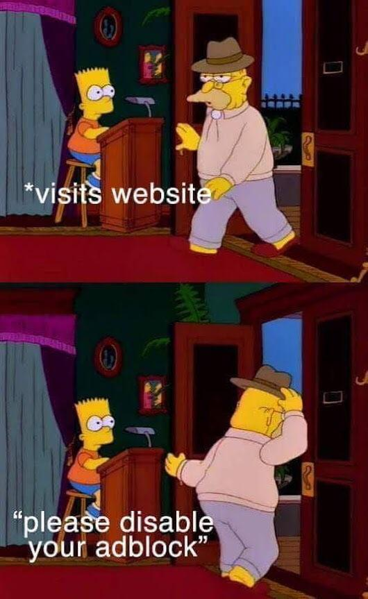

This video actually helped me a lot on how to improve this website. I followed along and did everything in his video and my website ended up looking 95% similar. The only difference is that my "links" at the top are stacking instead of being side by side. I can't for the life of me figure out why it's different even after comparing my css to his on Github. Regardless, it is a small difference and not the end of the world. Despite that difference I enjoyed the video and the way this person did it live so you could see how he troubleshoots problems as they arise. He did cut the video once which indicates that he took a little longer than normal but besides that he fixed everything in the moment. I did learn a few new tricks from him as well. I don't use div tags nearly as much as him so I'm going to make a conscious effort to start using them more. I also wasnt familiar with certain style tages like "flex" and the "keyframe" drop animations. I did previously know how to make a website responsive but that was a few years ago so as he was doing that it was starting to come back to me. Considering my website wasn't responsive for the first two assignments, I was very happy that he refreshed my memory on how to do that. All in all I'm really glad this video was assigned. It gave me the confidence to build a legitmate website.
I absoltely hate when websites or blogs intentionally post an article that takes up multiple pages. You usually see a clickbait title about something you're interested in which usually grabs your attention. You read the first page which covers a majority of the story and then you see the "Click for more". So you click it and all of a sudden there's a couple sentences and then another "Click for more". It usually doesn't take very long for you to catch on and lose interest in the story and give up. The websites that do this are more interested about getting paid for your clicks than they are about actually reporting news or information. I would dare to say improper use of pagination like this is downright unethical.
I think this passage does a good job of pointing out the ups and downs of user friendly contact information. I never considered that companies that openly broadcast their contact e-mail probably get a huge amount of spam. I never really questioned the reasoning behind Captchas and just complained about them instead. It's an interesting decision that companies have to make choosing between making themselves more susceptible to spam or increasing the difficulty of being able to contact them. The suggestion of an alternate solution in forums is interesting but not one that I agree with. I can't speak for other users but I typically don't spend much time looking for a solution on forums and I certainly don't ever put in the time to ever try to respond to another post and help them with the solution.
Popups on websites are almost always hated. Whether its a pop up about having to create account, disable adblocker, or sign up for their email list it's usually unwelcome and turns the reader off from the website. In my opinion, if you're going to have any of those on your website it should not take the form of a pop up that disables you from navigating the website until dealt with. Have that information easily accessible but optional. If people enjoy your website and are an active user then they will most likely create and account or sign up for an email list on their own.
The information the article provides for this principle is a whole lot of nothing and in fact at the end say that they are uncertain how this principle even applies to the Web! After my own research it basically states the that people on average only remember 5 to 9 things. So basically don't overload users with information.
Implies that the average person start to lose their patience after waiting on a web program longer than 2 seconds. As someone who uses the internet every single day I 100% agree with that.
I actually remember hearing about this rule before this class. Basically if a user can't find what they're looking for on a website in 3 clicks, they're going to give up and try elsewhere.
This principle says that normally 20% of your clients or users actually account for 80% of your business. This is well practiced in the business world and I had never considered it to also apply to web design. The first thing I think of are video games that release micro transactions or pay to win mechanics. The majority of their users don't get them but the few that do usually spend thousands of dollars.
This law isn't inherently for web design but it is applicable. Basically when creating clickable links they should be close together like a navigation bar. Having links all over the place is not very user friendly.
The summary of this is "Don't tease users". Give them exactly what they came for. Put your most important content on the home page and at the top.
Users don't want the most reasonable or smart answer. They want an "easy way out" shortcut. Give them what they want.
Users latch on to the first thing they see and use it to compare it to all others. If it ain't broke, don't fix it. Most redesigns are not well received.
People have become very used to blocking out advertisers and not giving them any attention. If you have actual content that is formatted like an ad(info on sidebars), chances are people will assume it's an ad and never look at it.
People are more likely to retain information when they can relate to it. This ties into usability when you make your website look similar to the more popular ones. To the user this provides your site with credibility.
Be like Amazon. Make sure you have good hosting and double check your website for any links that don't go anywhere. Making your website responsive is huge. Everyone has a cell phone these days and Amazon knows a lot of their customers will be using their website on them. They made their website user friendly to mobile, desktop, and tablet users.
Be like Apple. iPhones are the largest selling cell phone because of their simplicity. As we've covered before the average user is impatient and irrational. By making your website idiot-proof people will feel appreciate how clear and simple it is to use. No one has ever asked for an over complex website.
This goes along with clarity. Make it as easy as possible to use and make it like all the other popular websites. No one wants to relearn how to navigate a website. Scout how other websites similar to yours are formatted and do the same. It doesn't pay to be unique in this instance.
Add an informational page about yourself on the website. Some people like to know where your information is coming from and for those users you should be able to tell them why you are credible. This isn't going to be a majority of users but it's still important information to have as your website increases in size and you fall under more scrutiny.
This one is kind of common sense but sometimes people overextend themselves and forget. Make sure you know who your audience is and why they came to your website. It's very easy to get caught up and start adding irrelevant information. It also couldn't hurt to have a survey asking why they came to your website but for the love of god DON'T MAKE IT A POP-UP.